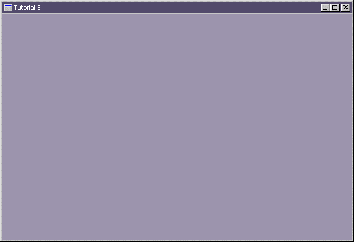

|
Tutorial 3 : A Simple Window
format PE GUI 4.0
entry start
include '%fasminc%\win32a.inc'
section '.data' data readable writeable
wHMain dd ?
wHInstance dd ?
wTitle db 'Tutorial 3',0 ;name of our window
wClsName db 'TUT03',0 ;name of our window class
wMsg MSG
wCls WNDCLASS
section '.code' code readable executable
start:
; +------------------------------+
; | registering the window class |
; +------------------------------+
invoke GetModuleHandle,NULL
mov [wHInstance],eax
mov [wCls.hInstance],eax
mov [wCls.style],CS_HREDRAW or CS_VREDRAW
mov [wCls.lpfnWndProc],window_procedure
mov [wCls.lpszClassName],wClsName
mov [wCls.hbrBackground],COLOR_WINDOW+1
invoke LoadIcon,NULL,IDI_APPLICATION
mov [wCls.hIcon],eax
invoke LoadCursor,NULL,IDC_ARROW
mov [wCls.hCursor],eax
invoke RegisterClass,wCls
; +--------------------------+
; | creating the main window |
; +--------------------------+
invoke CreateWindowEx,\
0,\
wClsName,\
wTitle,\
WS_OVERLAPPEDWINDOW,\
CW_USEDEFAULT,\
CW_USEDEFAULT,\
CW_USEDEFAULT,\
CW_USEDEFAULT,\
NULL,\
NULL,\
[wHInstance],\
NULL
mov [wHMain],eax
invoke ShowWindow,[wHMain],SW_SHOW
; +---------------------------+
; | entering the message loop |
; +---------------------------+
window_message_loop_start:
invoke GetMessage,wMsg,NULL,0,0
or eax,eax
je window_message_loop_end
invoke TranslateMessage,wMsg
invoke DispatchMessage,wMsg
jmp window_message_loop_start
window_message_loop_end:
invoke ExitProcess,0
; +----------------------+
; | the window procedure |
; +----------------------+
proc window_procedure,hWnd,uMsg,wParam,lParam
push ebx esi edi ;eventhough the API would preserved, but play safe :p
cmp [uMsg],WM_DESTROY
je wmDESTROY
wmDEFAULT:
invoke DefWindowProc,[hWnd],[uMsg],[wParam],[lParam]
jmp wmBYE
wmDESTROY:
invoke PostQuitMessage,0
wmBYE:
pop edi esi ebx
return
endp
section '.idata' import data readable writeable
library KERNEL32, 'KERNEL32.DLL',\
USER32, 'USER32.DLL'
import KERNEL32,\
GetModuleHandle, 'GetModuleHandleA',\
ExitProcess, 'ExitProcess'
import USER32,\
RegisterClass, 'RegisterClassA',\
CreateWindowEx, 'CreateWindowExA',\
DefWindowProc, 'DefWindowProcA',\
ShowWindow, 'ShowWindow',\
LoadCursor, 'LoadCursorA',\
LoadIcon, 'LoadIconA',\
GetMessage, 'GetMessageA',\
TranslateMessage, 'TranslateMessage',\
DispatchMessage, 'DispatchMessageA',\
PostQuitMessage, 'PostQuitMessage'
Result :

|